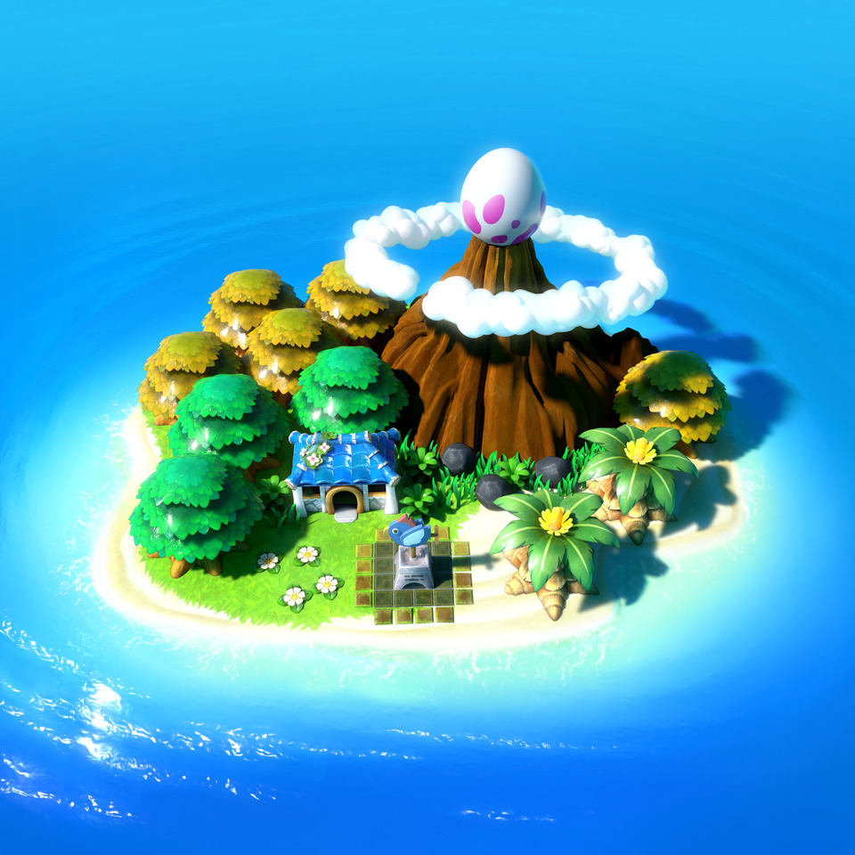

Peblo will aim to be a franchise, exploring the relationship between Ei and Peblo and what
fate has in store for them.
The game will be built using Unity and its scriptable rendering pipeline 'URP'.
As it's a new game, with a lot of technical methods to implement, in order to minimise risk
the Top-down engine asset by More Mountains is being used as the core in the project.
Having been developed for years, with good documentation - it is the perfect based to start
developing a top-down game.
I will then add additional fucntionality on top of it using custom scripts.
A lot of the core concepts need to be carefully analysed so it doesn't look like a legend of
zelda clone.
This is crucial in order for Peblo to stand out in the market.
The above
image displays the season manager component
Description
Peblo places the player in an pitch black world, with no direction and no questions to
answer to start with.
Small visual clues, will guide the player throughout. But, it's essential for the player to
feel
that Peblo is growing as they play. For this reason, peblo will start with none of the 5
senses and
slowly grow, as the player unravels their fate and answers questions of who they're.
The idea is to grow from an empty husk, to an being with emotion, whilst the choices they
make
on this path, affect fate itself.
Peblo will allow the player to explore a fragmented world, helping change his fate and
others.
They will be allowed to freely roam the world, albeit with some barriers in place in order
to place the game.
From an empty shell, to a full vessel, the player starts out with nothing.
The idea is too show the player that Peblo has just been born, rather then imply it.
This is crucial for the player to feel like he's interacting with the world.
I really want the Peblo world to feel rich and alive, its a perfect contrast to something
which is so empty to start with.
In order to achieve this, I want to use physics to make every second in the game feel
impactful.
From Dynamic Water, to vivid vegetation and players interaction with the environment. It
should feel special.
A dynamic story will allow for replayability. Each character has several fates, some fixed,
some changeable.
This leads to different endings and character progressions.
Peblo will have two difficulties. This is to ensure, extra challenges to veteran gamers,
whilst newer gamers
can pick up the game with ease.
The above
image displays the season manager component
Genre
Peblo is a Top-down action-adventure game with a branching decision-based story.
Platform
The targeted platform is the PC, but being built with performance in mind so that it
can be run on consoles (nintendo switch, Playstation, Xbox)
I want the nintendo switch to be the primary platform in the future.
Concept Art
 The above
image displays the season manager component
The above
image displays the season manager component
The above
image displays the season manager component
The above
image displays the season manager component
The above
image displays the season manager component
The above
image displays the season manager component
The above
image displays the season manager component
The above
image displays the season manager component
The above
image displays the season manager component


{kind=link}
{kind=link}